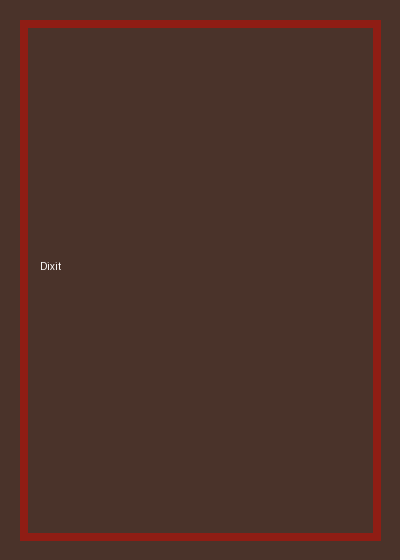

Dixit
- Jugadores
- 3 a 6
- Duración
- 30 minutos
- Edad
- Desde 8 años
Cada turno alguien describe una ilustración con una frase y el resto intenta adivinar cuál era. No hay lectura ni cuentas, así que jugadores de siete años compiten de igual a igual con adultos.
Descargar reglamento de Dixit (PDF)